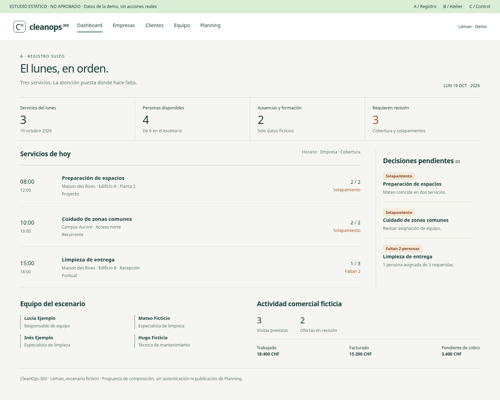
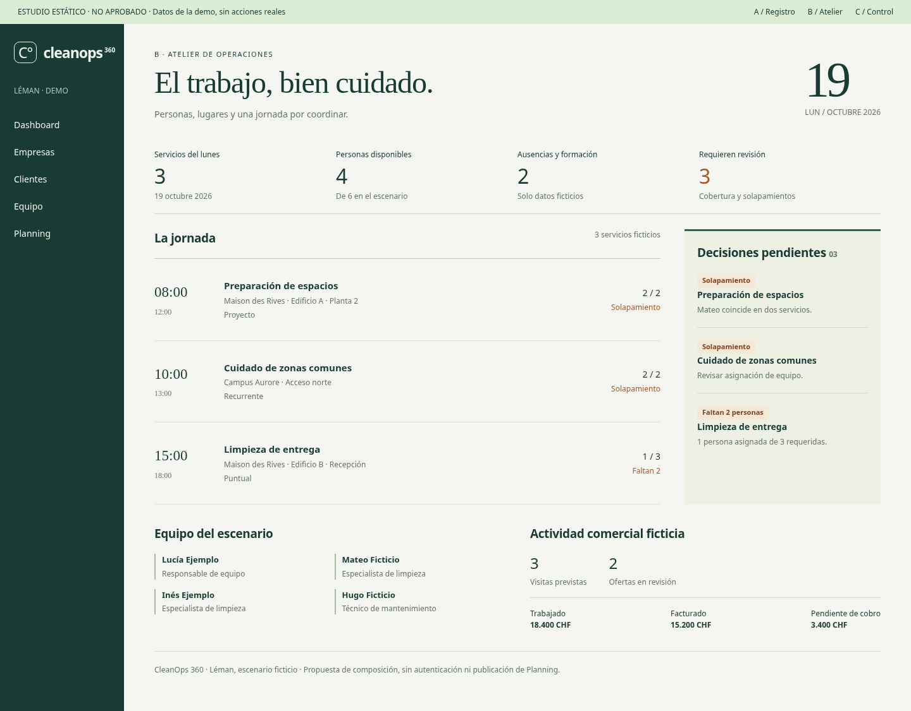
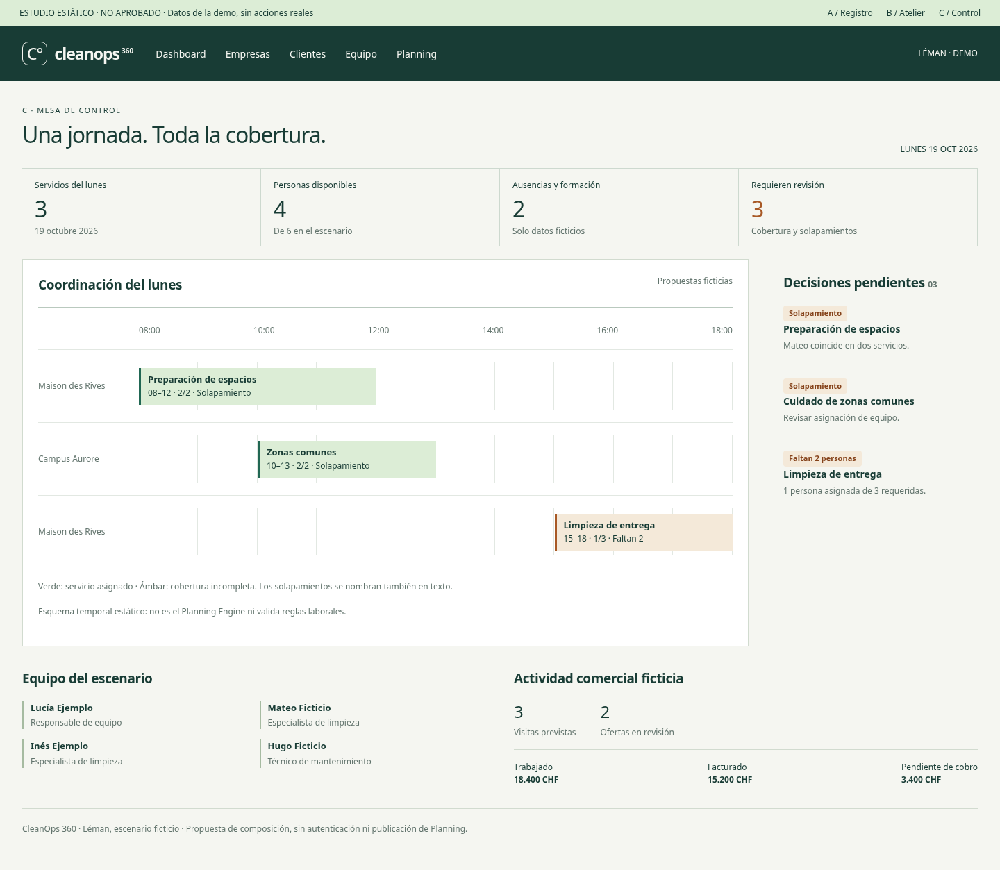

A · Registro suizo
Jerarquía precisa, agenda como registro y excepciones con espacio propio. Densidad útil con menor complejidad técnica.

Mismos servicios y cifras ficticias. Tres composiciones distintas. Ninguna modifica la aplicación, activa autenticación o cambia la marca desplegada. Los controles representados son ilustrativos; los enlaces de esta galería abren documentos de revisión.
Jerarquía precisa, agenda como registro y excepciones con espacio propio. Densidad útil con menor complejidad técnica.

Una voz editorial para las personas y lugares. Lateral compacto, fecha con carácter y jornada cronológica.

Tiempo y cobertura en un lienzo operativo. Mayor diferenciación para coordinación; exige más trabajo de accesibilidad.

Decisión propuesta: aprobar A para el contenido de /demo. Cambiar el shell global queda fuera del primer piloto. Consultar DIRECTIONS.md y PILOT.md antes de decidir.